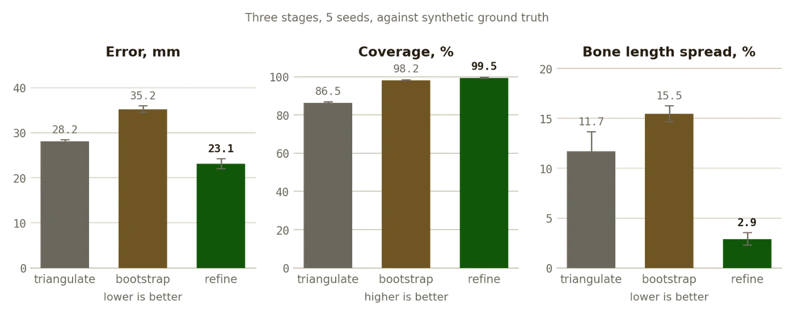

Research · 2025 — 2026
TwinPose
3D human motion from two phone cameras, with one windowed bundle adjustment where six heuristic passes used to be.
AIVisionPython

What it does
- Reconstructs 3D human motion from two ordinary phone cameras. A green flashlight carries the timing signal, a printed checkerboard the geometry, and one person can record alone.
- Five stages: synchronization, calibration, 2D detection, 3D reconstruction, wrist kinematics.
- The v2.0 rebuild replaced six sequential heuristic correction passes with a single windowed spatio-temporal bundle adjustment: reprojection, bone-length, acceleration and joint-limit residuals solved together with an analytic sparse Jacobian.
Results
- Synthetic benchmark: a scripted motion built by forward kinematics, projected through the real calibrated camera pair (1.88 m baseline), corrupted with a detector noise model, and run through the real pipeline. 510 frames, five noise seeds, ground truth known.
- 23.1 mm MPJPE and 19.7 mm PA-MPJPE after bundle adjustment, from 28.2 mm at triangulation. PCK@50 mm 91.7%, bone-length CV 2.9%, coverage 99.5%. Runtime 5.2 s for 510 frames.
- Reprojection error rises from 1.6 px to 3.4 px through the pipeline, and that is correct: detector noise is 2.5 px per axis, so the lower number was overfitting. Reprojection error alone cannot tell a good reconstruction from an overfitted one.
- A calibration fix: undistorting before stereo calibration took baseline error from 12.1% to 0.14%, around an OpenCV 5.x behavior that silently discards distortion coefficients.
- A measured error budget shows that calibration scale, not reconstruction, dominates absolute accuracy.
What ships
- No footage, weights or keypoints ship with the repository, so the benchmark is what makes accuracy measurable without any recording.
- A README-numbers test asserts every number in the README against the committed results file. 103 tests in about ten minutes.
Facts
- Years
- 2025 — 2026
- Status
- Public, release v2.0.0
- Stack
- Python, OpenCV, NumPy, SciPy; OpenPose BODY_25B for 2D keypoints
- Benchmark
- 510 frames, 5 seeds, real task30 camera pair